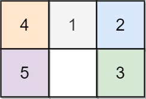

773. 滑动谜题
把 2×3 盘面编码成字符串，BFS 一层层扩散到目标「123450」；0 的可换邻居用预计算表，状态只有 720 种。
思路
- 盘面按 0~5 编号拉平成字符串，状态总数
6! = 720，BFS 第一次到123450的层数就是最少步数。 - 预计算
NEIGHBORS[i]：0 在下标i时能交换的相邻格，转移只在这个小表里查。 - 队列按层扩散（
dist每层 +1），生成新状态时直接判目标；队列扫空仍没到就是-1。
图解
最优解
1import java.util.*;2 3class Solution {4 // 0 在下标 i 时可交换的相邻格（2×3 盘面按下标 0~5 编号）5 private static final int[][] NEIGHBORS = {{1, 3}, {0, 2, 4}, {1, 5}, {0, 4}, {1, 3, 5}, {2, 4}};6 7 public int slidingPuzzle(int[][] board) {8 StringBuilder sb = new StringBuilder();9 for (int[] row : board) for (int v : row) sb.append(v);10 String start = sb.toString();11 if (start.equals("123450")) return 0;12 // 状态是 6 个数字的排列，一共只有 6! = 720 种，BFS 一层层扩散13 Queue<String> queue = new ArrayDeque<>();14 Set<String> seen = new HashSet<>();15 queue.add(start);16 seen.add(start);17 int dist = 0;18 while (!queue.isEmpty()) {19 dist++;20 for (int size = queue.size(); size > 0; size--) {21 String cur = queue.poll();22 int zero = cur.indexOf('0');23 for (int pos : NEIGHBORS[zero]) {24 String next = swap(cur, zero, pos);25 if (next.equals("123450")) return dist;26 if (seen.add(next)) queue.add(next);27 }28 }29 }30 return -1;31 }32 33 private String swap(String s, int i, int j) {34 char[] a = s.toCharArray();35 char t = a[i];36 a[i] = a[j];37 a[j] = t;38 return String.valueOf(a);39 }40}题目
在一个 2 x 3 的板上（board）有 5 块砖瓦，用数字 1~5 来表示, 以及一块空缺用 0 来表示。一次 移动 定义为选择 0 与一个相邻的数字（上下左右）进行交换.
最终当板 board 的结果是 [[1,2,3],[4,5,0]] 谜板被解开。
给出一个谜板的初始状态 board ，返回最少可以通过多少次移动解开谜板，如果不能解开谜板，则返回 -1 。
示例 1：

输入：board = [[1,2,3],[4,0,5]] 输出：1 解释：交换 0 和 5 ，1 步完成
示例 2:

输入：board = [[1,2,3],[5,4,0]] 输出：-1 解释：没有办法完成谜板
示例 3:

输入：board = [[4,1,2],[5,0,3]] 输出：5 解释： 最少完成谜板的最少移动次数是 5 ， 一种移动路径: 尚未移动: [[4,1,2],[5,0,3]] 移动 1 次: [[4,1,2],[0,5,3]] 移动 2 次: [[0,1,2],[4,5,3]] 移动 3 次: [[1,0,2],[4,5,3]] 移动 4 次: [[1,2,0],[4,5,3]] 移动 5 次: [[1,2,3],[4,5,0]]
提示：
board.length == 2board[i].length == 30 <= board[i][j] <= 5board[i][j]中每个值都 不同
题面取自力扣当前版本。
数据快照 2026-11-04。题面版权归力扣所有，本站点仅供本人学习使用，请勿对外发布。